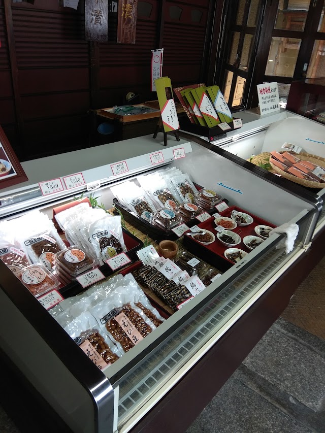
| 営業時間 | 月・火・水・木・金・土 9:00〜18:00 |
|---|---|
| 定休日 | 日曜 |
| 住所 | 滋賀県大津市長等１丁目５−２１ |
| 予約 | 要確認 — ☎ 077-524-2406 ／ 公式サイト |
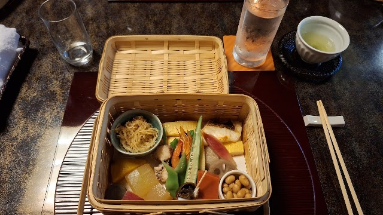
| 営業時間 | 月・火・水・木・金・土・日 11:30〜14:00, 16:30〜22:00 |
|---|---|
| 定休日 | なし(要最終確認) |
| 住所 | 滋賀県大津市京町２丁目４−１０ |
| 予約 | 可 — ☎ 077-522-4428 ／ 公式サイト |
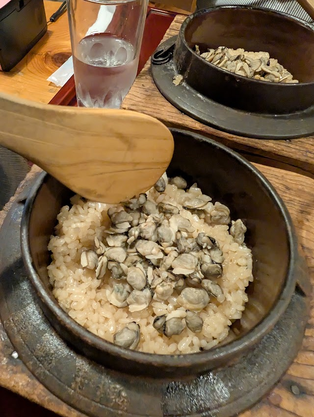
| 営業時間 | 月・火・水・木・金 11:00〜14:30 ／ 土・日 11:00〜14:30, 17:00〜19:00 |
|---|---|
| 定休日 | なし(要最終確認) |
| 住所 | 滋賀県大津市石山寺３丁目２−３７ |
| 予約 | 可 — ☎ 077-537-0127 ／ 公式サイト |
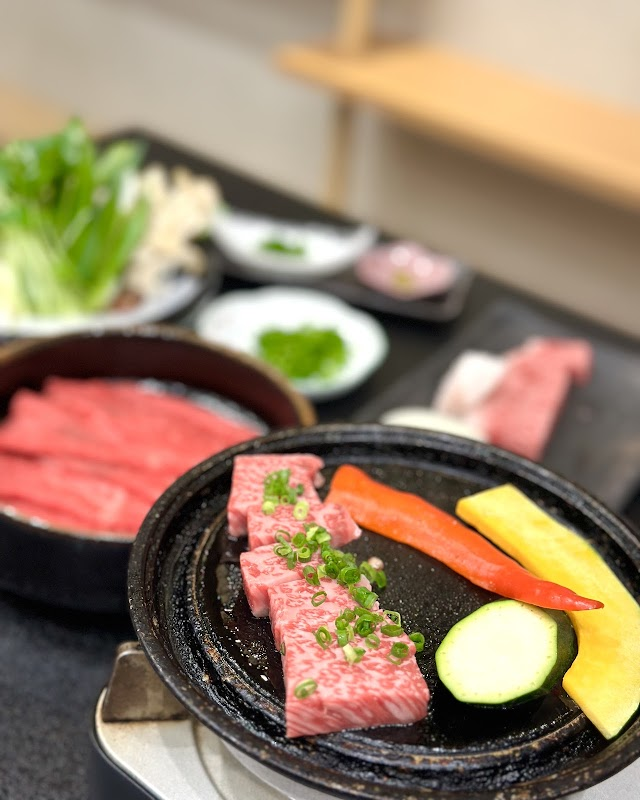
| 営業時間 | 月・火・水・木・金・土・日 10:00〜19:00 |
|---|---|
| 定休日 | なし(要最終確認) |
| 住所 | 滋賀県大津市鳥居川町７−５ |
| 予約 | 可 — ☎ 077-534-1211 ／ 公式サイト |
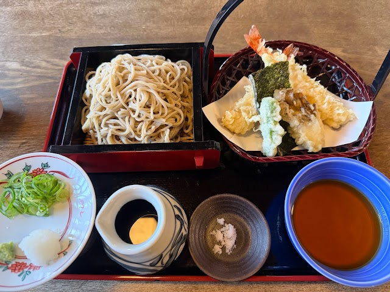
| 営業時間 | 月・火・水・木・金・土・日 11:00〜15:30 |
|---|---|
| 定休日 | なし(要最終確認) |
| 住所 | 滋賀県大津市坂本４丁目１１−４０ |
| 予約 | 可 — 公式サイト |
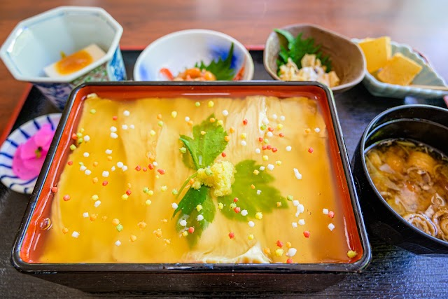
| 営業時間 | 月・火・水・木・金・土・日 11:00〜14:30 |
|---|---|
| 定休日 | なし(要最終確認) |
| 住所 | 滋賀県大津市坂本４丁目５−１７ |
| 予約 | 要確認 — ☎ 077-578-0567 ／ 公式サイト |
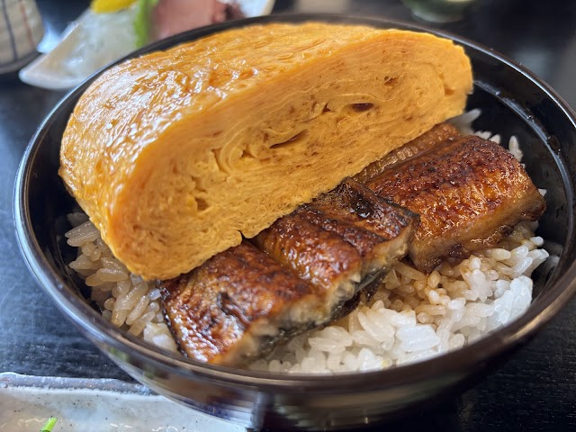
| 営業時間 | 月・火・水・金・土・日 11:00〜20:30 |
|---|---|
| 定休日 | 木曜 |
| 住所 | 滋賀県大津市大谷町２３−１５ 23番地15号 |
| 予約 | 可 — ☎ 077-524-2222 ／ 公式サイト |
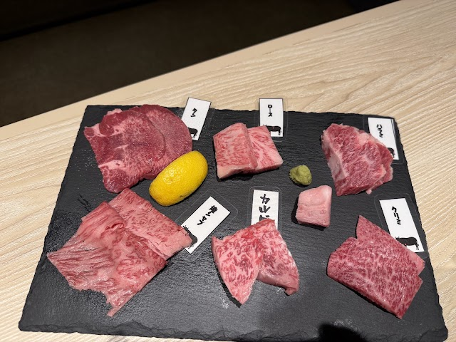
| 営業時間 | 月・水・木・金・土・日 11:30〜14:00, 17:00〜22:00 |
|---|---|
| 定休日 | 火曜 |
| 住所 | 滋賀県大津市京町３丁目３−１８ |
| 予約 | 可 — ☎ 077-527-0235 ／ 公式サイト |
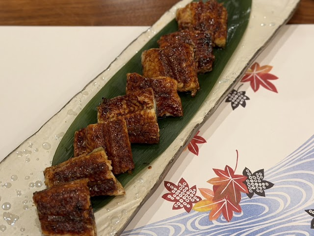
| 営業時間 | 火・水・木・金・土・日 17:30〜23:30 |
|---|---|
| 定休日 | 月曜 |
| 住所 | 滋賀県大津市本堅田４丁目１５−１３ 山田ビル 1階 |
| 予約 | 可 — ☎ 077-571-6677 ／ 公式サイト |
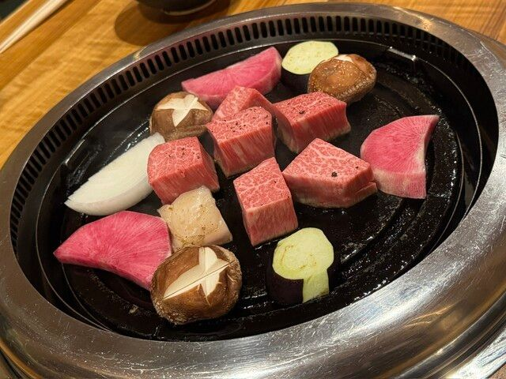
| 営業時間 | 月・土・日 12:00〜15:00, 17:00〜21:00 ／ 火・金 17:00〜21:00 |
|---|---|
| 定休日 | 水・木曜 |
| 住所 | 滋賀県大津市中央１丁目７−３５ |
| 予約 | 可 — ☎ 050-2018-6015 ／ 公式サイト |
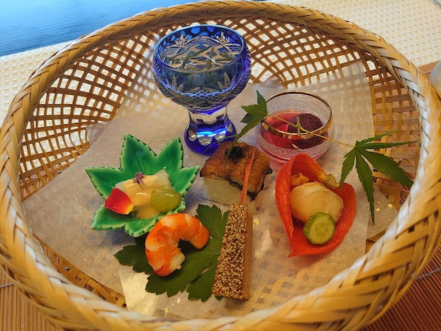
| 営業時間 | 月・水・木・金・土・日 11:30〜15:00, 17:00〜21:30 |
|---|---|
| 定休日 | 火曜 |
| 住所 | 滋賀県大津市石山寺１丁目３−３ |
| 予約 | 可 — ☎ 077-537-1436 ／ 公式サイト |
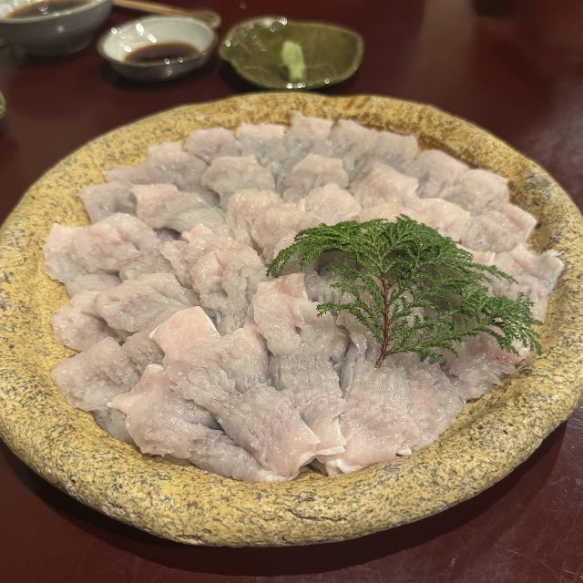
| 営業時間 | 月・火・水・木・金・土 17:00〜23:00 |
|---|---|
| 定休日 | 日曜 |
| 住所 | 滋賀県大津市中央３丁目４−３０ |
| 予約 | 可 — ☎ 077-526-3824 ／ 公式サイト |
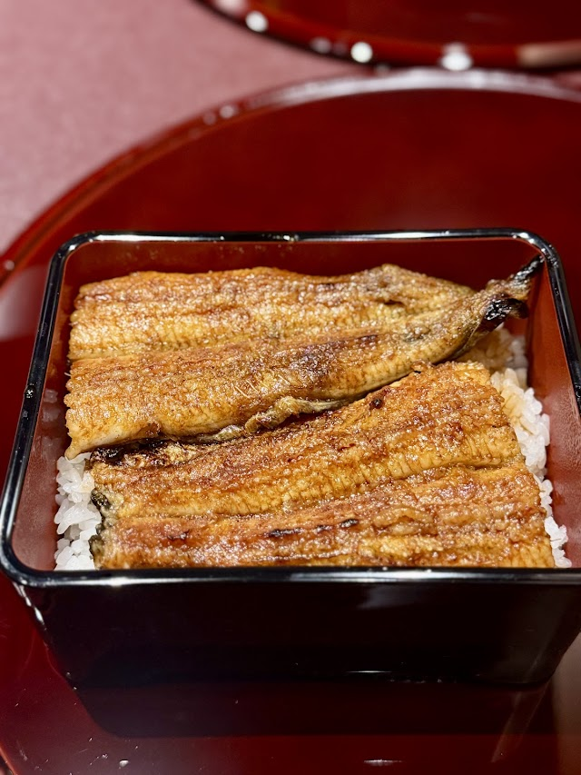
| 営業時間 | 月・水・木・金・土・日 11:00〜14:00, 17:00〜20:00 |
|---|---|
| 定休日 | 火曜 |
| 住所 | 滋賀県大津市瀬田１丁目１６−１５ |
| 予約 | 可 — ☎ 0120-138-103 ／ 公式サイト |
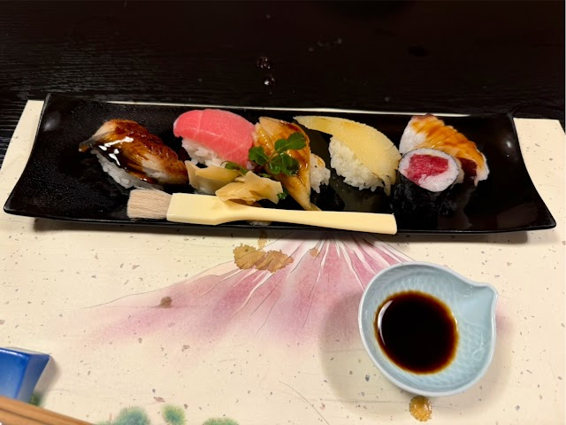
| 営業時間 | 月・火・木・金・土 12:00〜14:00, 17:30〜22:00 ／ 水・日 11:30〜14:00, 17:30〜22:00 |
|---|---|
| 定休日 | なし(要最終確認) |
| 住所 | 滋賀県大津市富士見台５５−１１ |
| 予約 | 要確認 — ☎ 077-534-8453 ／ 公式サイト |
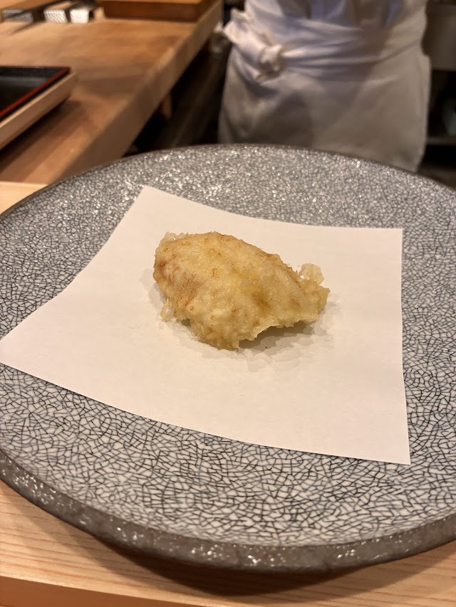
| 営業時間 | 月・火・水・木・金・土・日 12:00〜15:00, 18:00〜21:00 |
|---|---|
| 定休日 | なし(要最終確認) |
| 住所 | 滋賀県大津市春日町８−１２ ロイヤルレジェンド 1階 |
| 予約 | 可 — ☎ 077-526-6685 ／ 公式サイト |
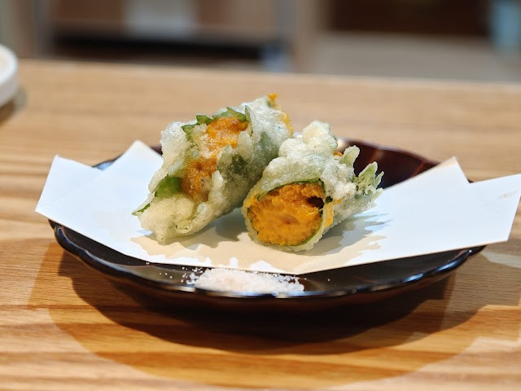
| 営業時間 | 月・火・木・金・土・日 17:00〜23:00 |
|---|---|
| 定休日 | 水曜 |
| 住所 | 滋賀県大津市馬場１丁目４−３０ スペースVANVA1 106 |
| 予約 | 可 — ☎ 077-572-7533 ／ 公式サイト |
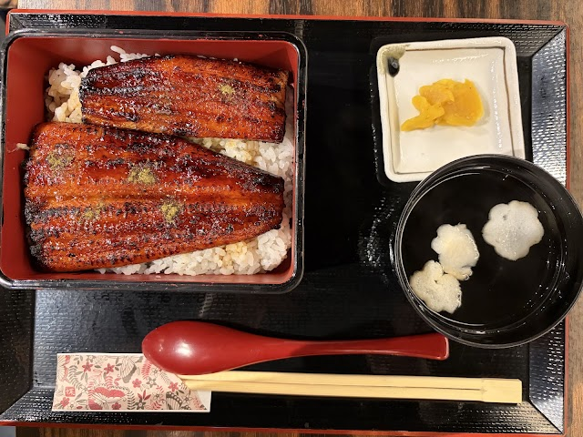
| 営業時間 | 月・火・水・木・金・土・日 11:00〜14:00 |
|---|---|
| 定休日 | なし(要最終確認) |
| 住所 | 滋賀県大津市栄町３−４ |
| 予約 | 可 — ☎ 070-8324-6138 ／ 公式サイト |
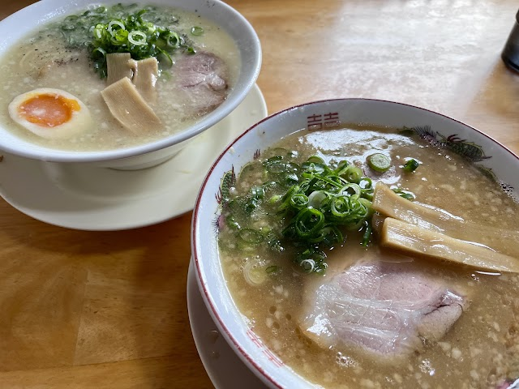
| 営業時間 | 火・水・金・土・日 11:30〜13:30, 18:00〜20:00 |
|---|---|
| 定休日 | 月・木曜 |
| 住所 | 滋賀県大津市大江６丁目３０−１８ |
| 予約 | 要確認 — ☎ 077-548-9112 |
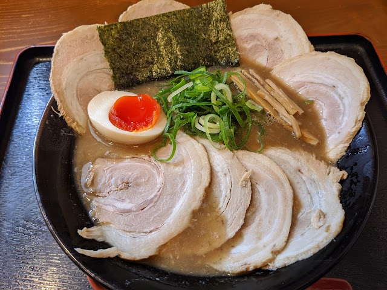
| 営業時間 | 月・火・水・木・金・土・日 11:00〜15:00, 18:00〜23:00 |
|---|---|
| 定休日 | なし(要最終確認) |
| 住所 | 滋賀県大津市今堅田２丁目４０−２５ |
| 予約 | 要確認 — ☎ 077-574-4747 ／ 公式サイト |
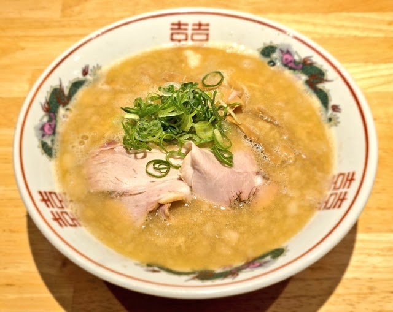
| 営業時間 | 月・火・水・木・金 11:30〜13:30, 18:00〜20:45 ／ 土 11:30〜13:30, 18:30〜20:30 ／ 日 11:30〜14:00 |
|---|---|
| 定休日 | なし(要最終確認) |
| 住所 | 滋賀県大津市御幸町４−３０ 田中市コーポ 101 |
| 予約 | 要確認 — 公式サイト |
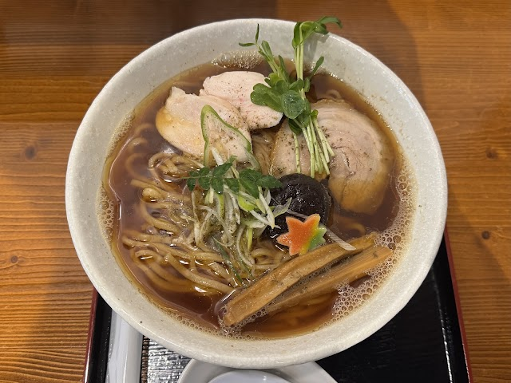
| 営業時間 | 火・水・木・金・土・日 11:30〜14:30, 18:00〜21:00 |
|---|---|
| 定休日 | 月曜 |
| 住所 | 滋賀県大津市一里山２丁目１８−１３ コーポ 幸 |
| 予約 | 要確認 — ☎ 077-543-5233 |
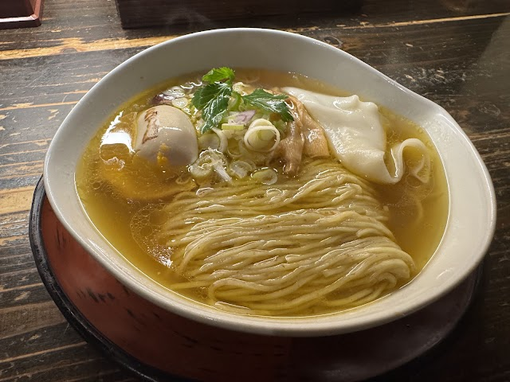
| 営業時間 | 火・水・木・金・土 11:00〜23:00 ／ 日 11:00〜21:00 |
|---|---|
| 定休日 | 月曜 |
| 住所 | 滋賀県大津市浜大津４丁目７−３５ |
| 予約 | 要確認 — ☎ 077-527-2877 ／ 公式サイト |
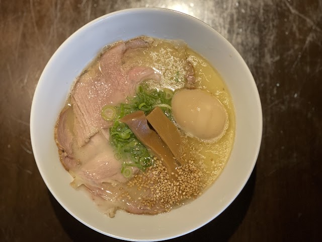
| 営業時間 | 月・火・水・木・金・土・日 11:30〜14:30 |
|---|---|
| 定休日 | なし(要最終確認) |
| 住所 | 滋賀県大津市馬場１丁目４−３３ Ｔ＆Ｔ第２ビル |
| 予約 | 可 — ☎ 077-525-7700 ／ 公式サイト |
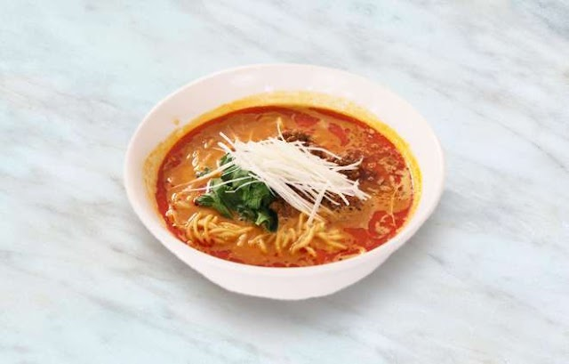
| 営業時間 | 月・火・水・木 11:30〜14:00, 17:00〜20:30 ／ 金 11:30〜14:00, 17:00〜21:00 ／ 土・日 11:30〜14:30, 17:00〜21:00 |
|---|---|
| 定休日 | なし(要最終確認) |
| 住所 | 滋賀県大津市浜大津４丁目７−８ |
| 予約 | 可 — ☎ 077-524-0636 ／ 公式サイト |
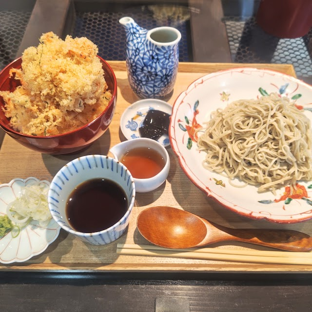
| 営業時間 | 月・火・木・金・土・日 11:00〜15:00 |
|---|---|
| 定休日 | 水曜 |
| 住所 | 滋賀県大津市石山寺１丁目３−１７ |
| 予約 | 可 — ☎ 077-537-2045 ／ 公式サイト |
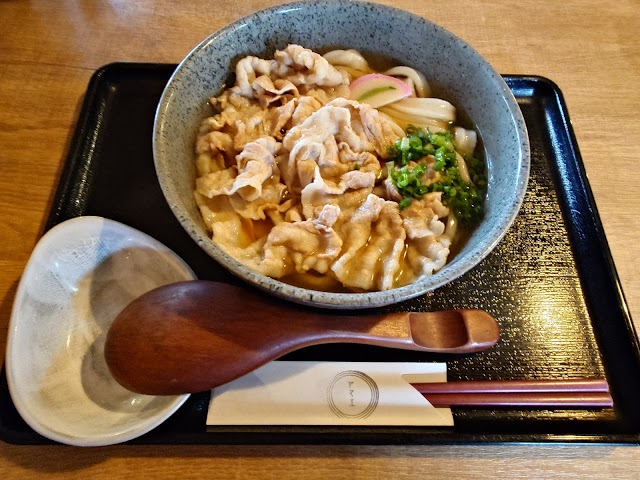
| 営業時間 | 火・水・木・金・土 11:00〜14:00 ／ 日 7:00〜12:00 |
|---|---|
| 定休日 | 月曜 |
| 住所 | 滋賀県大津市桐生１丁目２３−１１ |
| 予約 | 要確認 — ☎ 077-548-8699 ／ 公式サイト |
| 営業時間 | 月・火・水・木・金 17:30〜23:30 |
|---|---|
| 定休日 | 土・日曜 |
| 住所 | 滋賀県大津市末広町２−３ |
| 予約 | 可 — ☎ 077-525-2712 ／ 公式サイト |
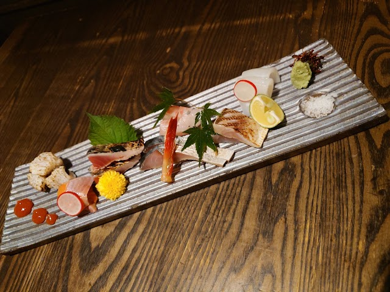
| 営業時間 | 月・火・水・木・金・土 17:00〜23:00 |
|---|---|
| 定休日 | 日曜 |
| 住所 | 滋賀県大津市春日町２−１ COCOLAS大津 1F |
| 予約 | 可 — ☎ 077-522-1147 ／ 公式サイト |
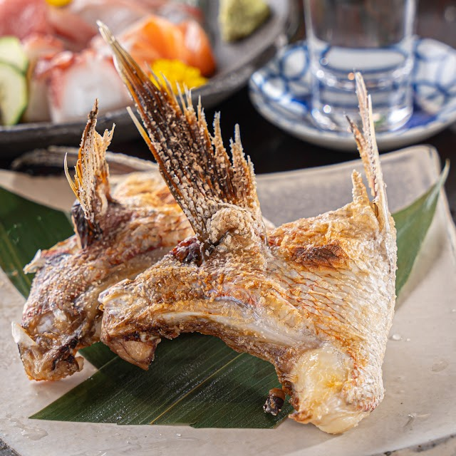
| 営業時間 | 月・火・水・木・金・土 17:00〜22:00 |
|---|---|
| 定休日 | 日曜 |
| 住所 | 滋賀県大津市梅林１丁目３−１３ リンカーンビル 1階 |
| 予約 | 可 — ☎ 077-536-5323 ／ 公式サイト |
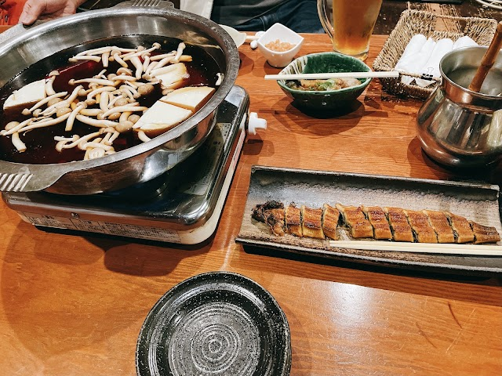
| 営業時間 | 月・火・水・木・金・土 17:00〜23:00 |
|---|---|
| 定休日 | 日曜 |
| 住所 | 滋賀県大津市末広町８−１３ |
| 予約 | 可 — ☎ 077-522-4554 ／ 公式サイト |
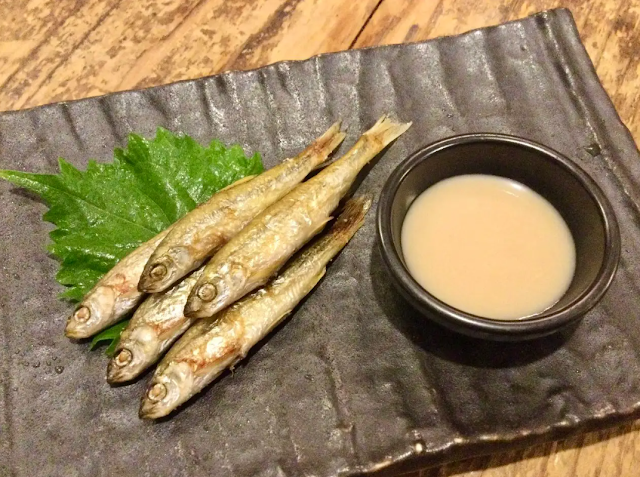
| 営業時間 | 月・火・水・木・金・土 17:30〜23:30 |
|---|---|
| 定休日 | 日曜 |
| 住所 | 滋賀県大津市浜大津２丁目１−２６ |
| 予約 | 可 — ☎ 050-5485-3988 ／ 公式サイト |
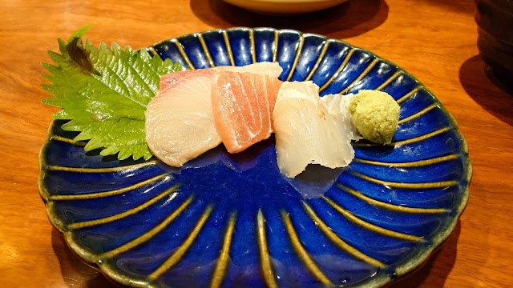
| 営業時間 | 月・火・水・木・金 11:30〜23:00 ／ 土 14:00〜23:00 ／ 日 14:00〜22:00 |
|---|---|
| 定休日 | なし(要最終確認) |
| 住所 | 滋賀県大津市浜大津１丁目１−５ |
| 予約 | 可 — ☎ 077-510-0245 ／ 公式サイト |
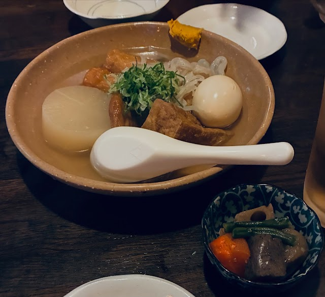
| 営業時間 | 月・火・水・木・金・土 17:30〜0:00 |
|---|---|
| 定休日 | 日曜 |
| 住所 | 滋賀県大津市浜大津１丁目２−３ |
| 予約 | 可 — ☎ 077-526-1163 ／ 公式サイト |
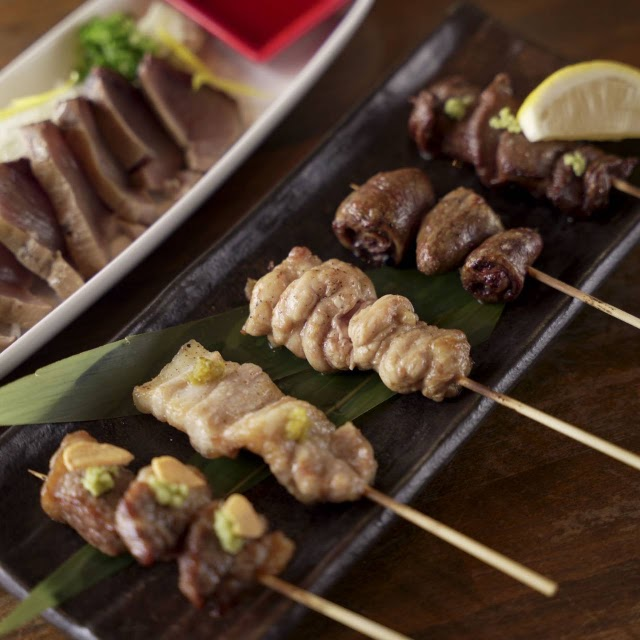
| 営業時間 | 月・火・水・日 17:00〜23:00 ／ 金・土 17:00〜0:00 |
|---|---|
| 定休日 | 木曜 |
| 住所 | 滋賀県大津市馬場１丁目４−２０ |
| 予約 | 可 — ☎ 077-525-1156 ／ 公式サイト |
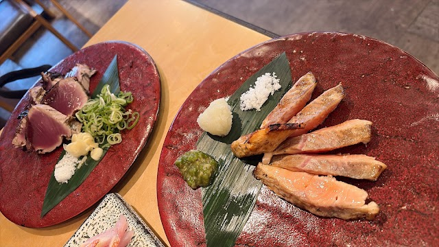
| 営業時間 | 月・火・水・木・金 17:00〜0:00 ／ 土・日 13:00〜0:00 |
|---|---|
| 定休日 | なし(要最終確認) |
| 住所 | 滋賀県大津市粟津町４−９ ステーションプラザ 1F |
| 予約 | 可 — ☎ 077-531-2440 ／ 公式サイト |
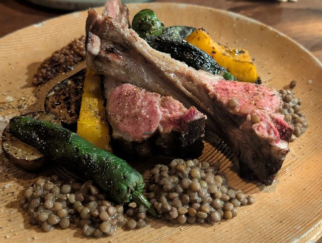
| 営業時間 | 月・火・水・木 12:00〜14:30, 18:00〜22:30 ／ 金・土 18:00〜22:30 |
|---|---|
| 定休日 | 日曜 |
| 住所 | 滋賀県大津市長等２丁目３−９ |
| 予約 | 可 — ☎ 077-536-5490 ／ 公式サイト |
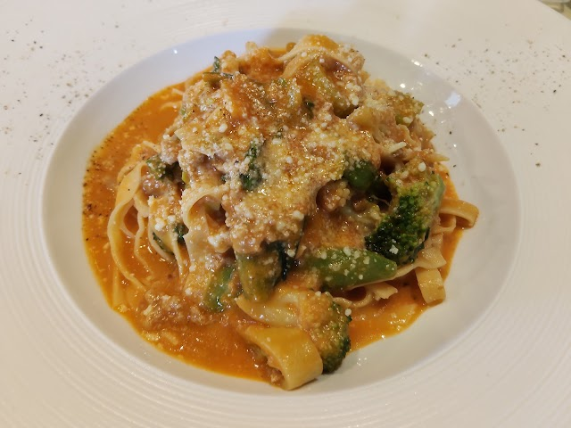
| 営業時間 | 月・火・水・木・金・土・日 11:30〜14:00, 18:00〜22:00 |
|---|---|
| 定休日 | なし(要最終確認) |
| 住所 | 滋賀県大津市馬場１丁目１１−２ 膳所 駅前 通り 第 13 森田 ビル 1F |
| 予約 | 可 — ☎ 077-521-7720 ／ 公式サイト |
| 営業時間 | 月・火・木・金 11:00〜14:30 ／ 土・日 11:00〜14:30, 17:30〜20:30 |
|---|---|
| 定休日 | 水曜 |
| 住所 | 滋賀県大津市打出浜１５−３ |
| 予約 | 可 — ☎ 077-522-1811 ／ 公式サイト |
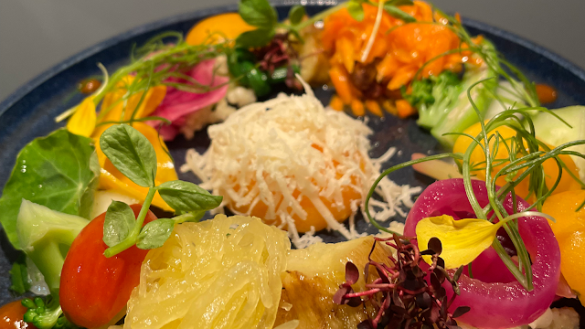
| 営業時間 | 月・水・木・金 11:30〜14:00, 18:00〜22:00 ／ 土・日 12:00〜14:00, 18:00〜22:00 |
|---|---|
| 定休日 | 火曜 |
| 住所 | 滋賀県大津市粟津町１７−１４ リアル石山ビル 1F |
| 予約 | 可 — ☎ 077-572-7881 ／ 公式サイト |
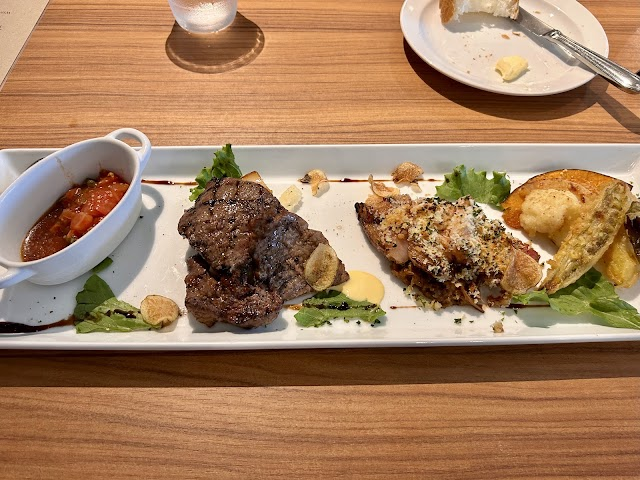
| 営業時間 | 月・火・水・木・金・土 11:30〜14:00, 18:00〜21:00 |
|---|---|
| 定休日 | 日曜 |
| 住所 | 滋賀県大津市栄町３−２ タツミビル 2F |
| 予約 | 可 — ☎ 077-537-5655 ／ 公式サイト |
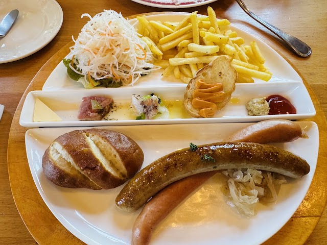
| 営業時間 | 月・火・水・木・金・土・日 11:00〜14:30, 17:00〜20:00 |
|---|---|
| 定休日 | なし(要最終確認) |
| 住所 | 滋賀県大津市由美浜５ |
| 予約 | 可 — ☎ 077-526-3500 ／ 公式サイト |
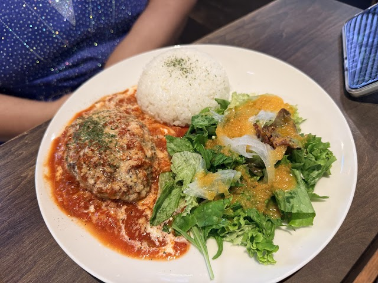
| 営業時間 | 火・金・土・日 11:30〜19:00 ／ 水 11:30〜17:00 |
|---|---|
| 定休日 | 月・木曜 |
| 住所 | 滋賀県大津市浜町９−２８ 中央ビル 南側角 |
| 予約 | 要確認 — 公式サイト |
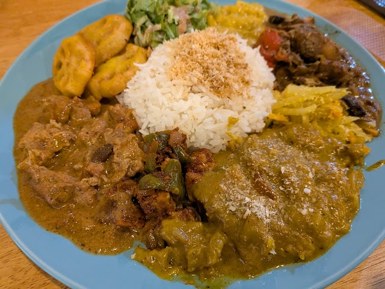
| 営業時間 | 月・火・水・土・日 11:30〜14:30 |
|---|---|
| 定休日 | 木・金曜 |
| 住所 | 滋賀県大津市京町１丁目１−１４ |
| 予約 | 要確認 — 公式サイト |
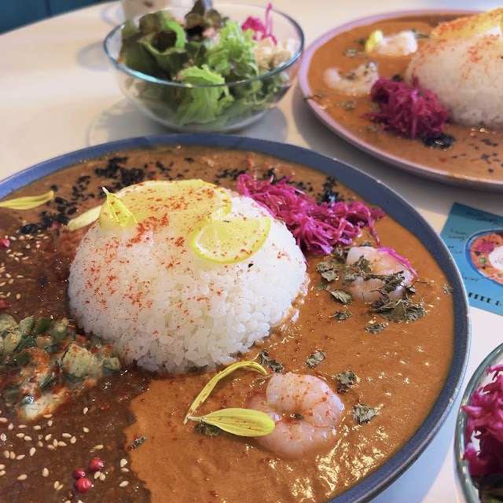
| 営業時間 | 月・水・木 11:30〜15:00 ／ 土・日 11:30〜16:00 |
|---|---|
| 定休日 | 火・金曜 |
| 住所 | 滋賀県大津市本堅田１丁目１８−１０ |
| 予約 | 可 — ☎ 077-500-3563 ／ 公式サイト |
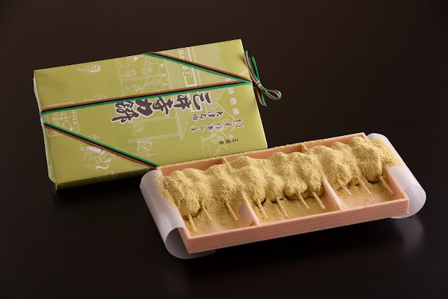
| 営業時間 | 月・火・水・木・金・土・日 7:00〜19:00 |
|---|---|
| 定休日 | なし(要最終確認) |
| 住所 | 滋賀県大津市浜大津２丁目１−３０ |
| 予約 | 要確認 — ☎ 077-524-2689 ／ 公式サイト |
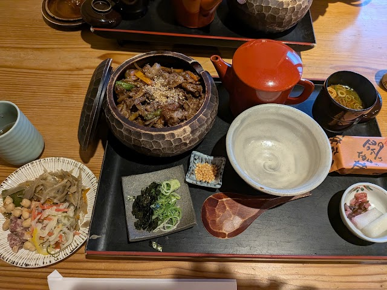
| 営業時間 | 月・火・木・金・土・日 10:00〜17:00 |
|---|---|
| 定休日 | 水曜 |
| 住所 | 滋賀県大津市大石龍門４丁目２−１ |
| 予約 | 可 — ☎ 077-546-3131 ／ 公式サイト |
| 営業時間 | 月・水・木・金 10:00〜17:00 ／ 土・日 9:00〜18:00 |
|---|---|
| 定休日 | 火曜 |
| 住所 | 滋賀県大津市石山寺１丁目３−２２ |
| 予約 | 要確認 — ☎ 077-533-3900 ／ 公式サイト |
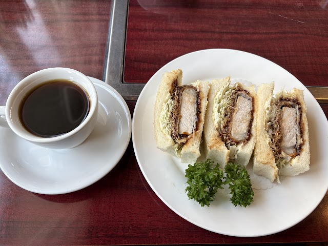
| 営業時間 | 月・火・水・木・金 11:30〜14:00 |
|---|---|
| 定休日 | 土・日曜 |
| 住所 | 滋賀県大津市打出浜４−１４ |
| 予約 | 可 — ☎ 077-522-6172 ／ 公式サイト |
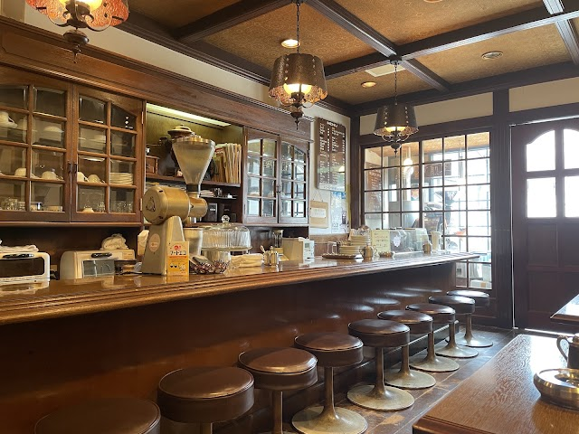
| 営業時間 | 月・火・水・木・金 9:00〜17:00 |
|---|---|
| 定休日 | 土・日曜 |
| 住所 | 滋賀県大津市長等２丁目３−４ |
| 予約 | 要確認 — ☎ 077-525-0901 |
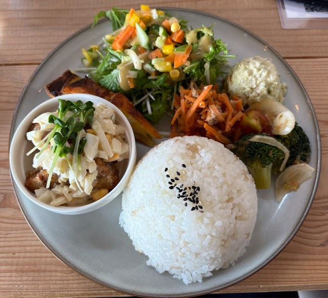
| 営業時間 | 平日11:00〜17:00、土日11:00〜20:00 |
|---|---|
| 定休日 | 不定休 |
| 住所 | 滋賀県大津市打出浜１５−５ なぎさＷＡＲＭＳ |
| 予約 | 要確認 |
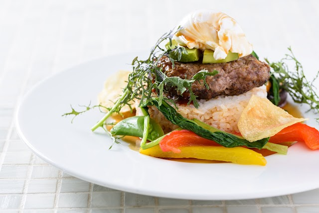
| 営業時間 | 月・水・木・金・土・日 11:00〜17:30 |
|---|---|
| 定休日 | 火曜 |
| 住所 | 滋賀県大津市今堅田１丁目２−２０ レークウエストヨットクラブ 2F |
| 予約 | 可 — ☎ 077-571-6017 ／ 公式サイト |
| 営業時間 | 月・火・水・木・金・土 7:00〜19:00 |
|---|---|
| 定休日 | 日曜 |
| 住所 | 滋賀県大津市大萱１丁目１１−１１ 萱野ビル 1f |
| 予約 | 要確認 — ☎ 077-547-2810 ／ 公式サイト |
本ガイドは個人利用目的で作成。掲載情報は2026年9月時点の調査に基づく。写真出典: Google Maps投稿写真(©各投稿者/Google)。